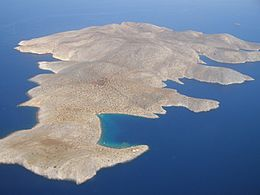
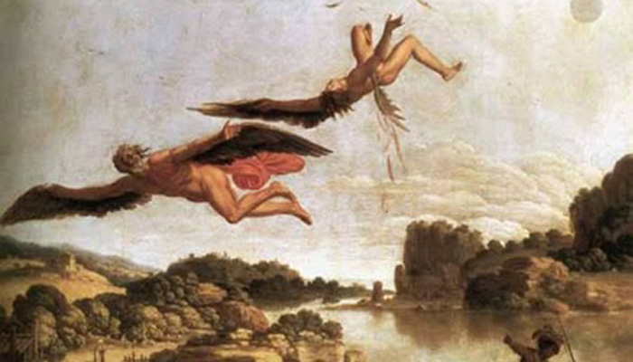
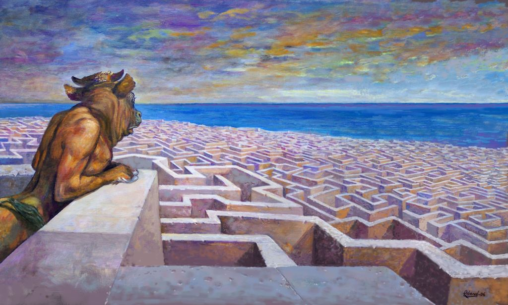

Crete has a strong association with Ancient Greek Gods but is also connected with the Minoan civilization
Myths of the creation of the islands
The ancient Greek god Zeus launched a lightning bolt at a giant lizard that was threatening Crete. The lizard immediately turned to stone and became the island of Dia. The island can be seen from Knossos and it has the shape of a giant lizard.

The islets of Lefkai were the result of a musical contest between the Sirens and the Muses. The Muses were so anguished to have lost that they plucked the feathers from the wings of their rivals; the Sirens turned white and fell into the sea at Aptera ("featherless") where they formed the islands in the bay that were called Lefkai (the islands of Souda and Leon).
Myth of Icarus and Dedalous
In the myth of the minotaur, Icarus and Daedalus the king ordered Icarus to build a labyrinth to lock the minotaur up. Icarus and his son were locked up there, so Icarus created two pairs of wings to escape by flying away. The materials of the wings were not resistant to the Sun, so if they got closer and closer, the wings would melt. Icarus warned his son about this, but he didn’t obey him, so he fell down to the sea and died.

